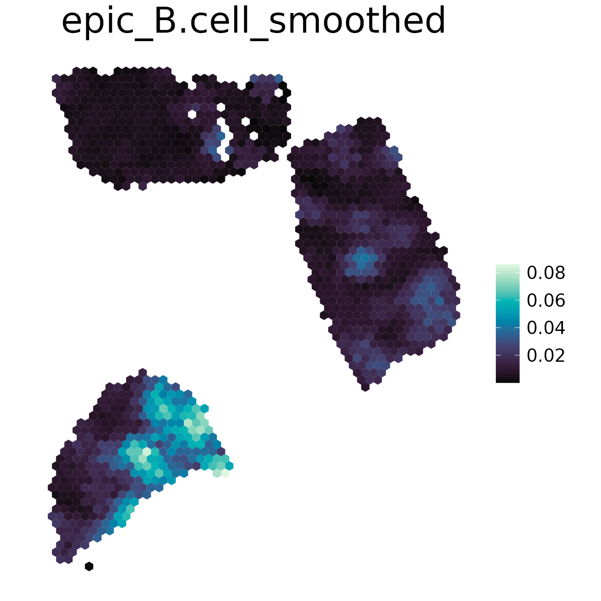
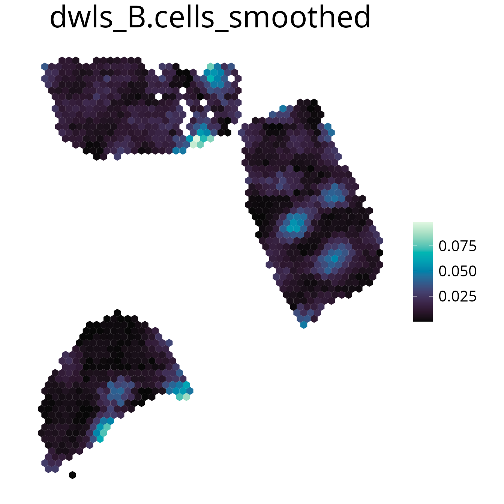
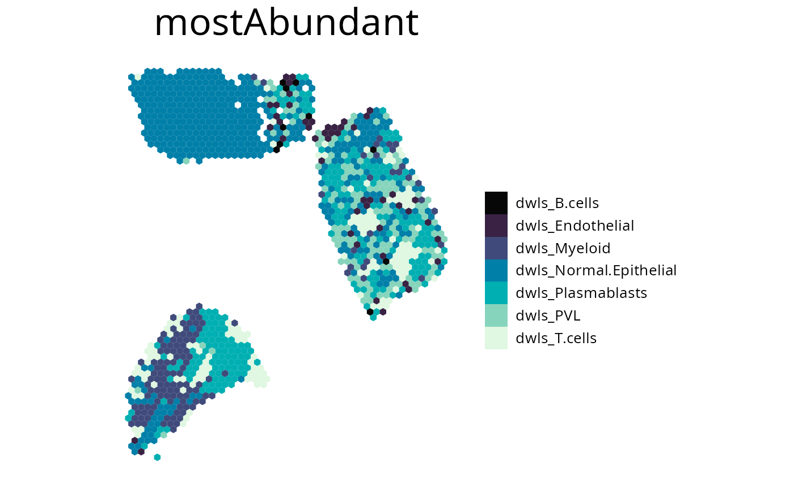
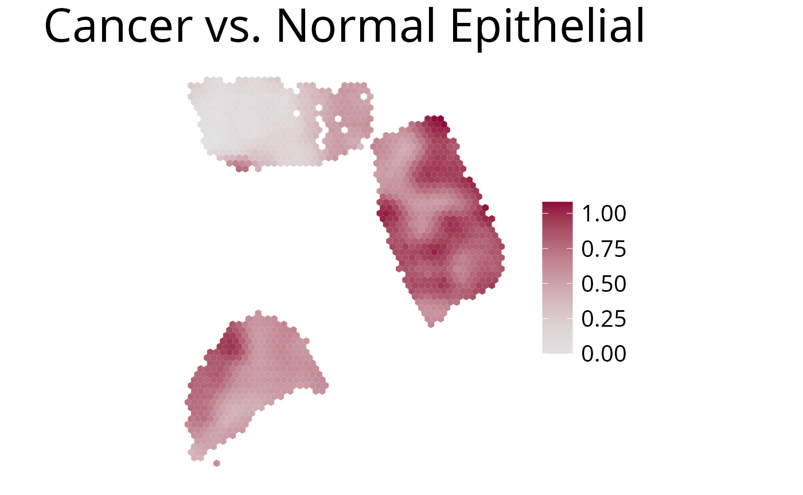
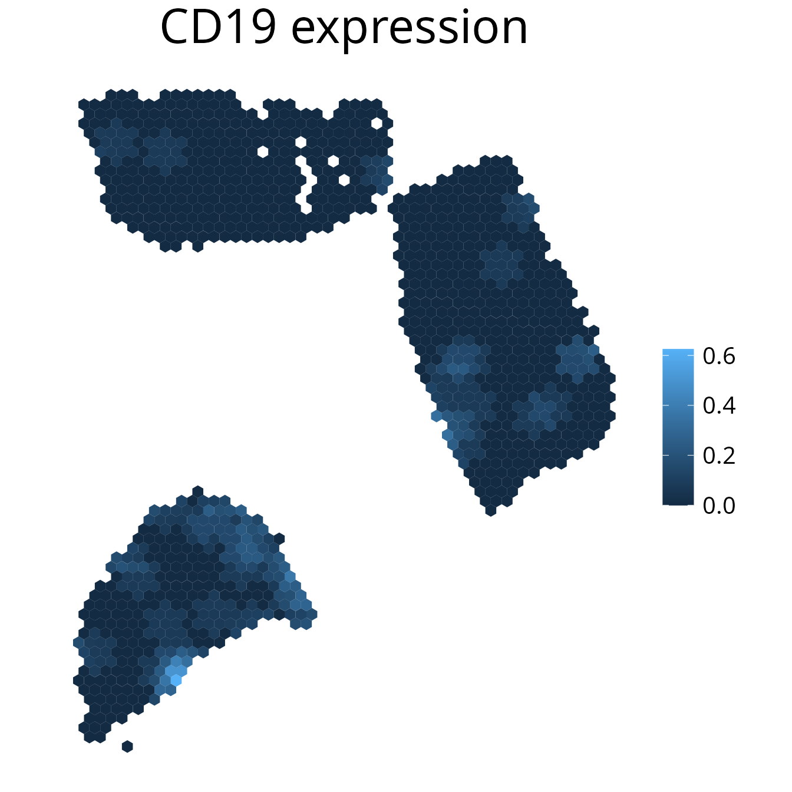
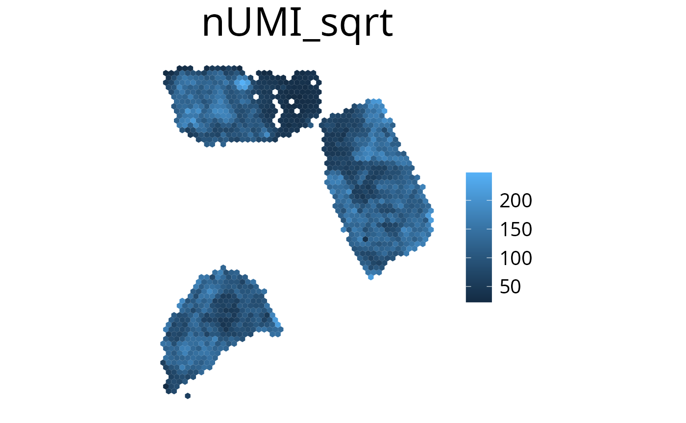
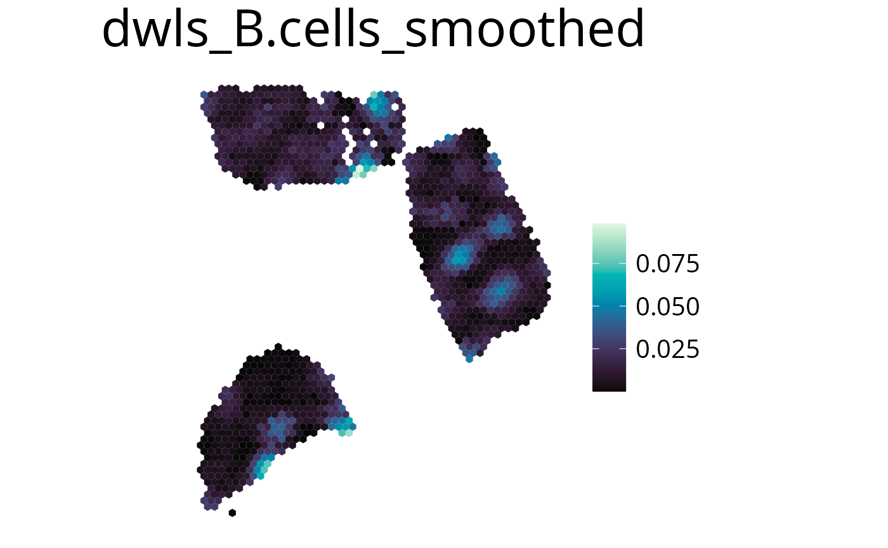

spacedeconv Visualization
spacedeconv_visualization.RmdTo introduce spacedeconvs visualization functions we will utilize a
deconvolution result obtained from internal sample data and the
deconvolution method EPIC. Note that EPIC requires
unnormalized data and is building the signature and deconvoluting in one
step. Therefore only deconvolute() is called.
library(spacedeconv)
library(SpatialExperiment)
data("spatial_data_3")
spe <- preprocess(spatial_data_3)
spe <- spacedeconv::normalize(spe, method = "cpm")
deconv <- spacedeconv::deconvolute(
spe,
method = "epic",
assay_sp = "cpm"
)Available Visualizations
At the moment spacedeconv offers two visualization functions.
-
plot_celltype()visualizes the spatial image with color coded cell type fractions for one cell type. -
plot_gene()plot spatial gene expression. -
plot_umi_count()Plots the number of sequenced reads per spot. -
plot_most_abundant()Render a plot containing the most abundant cell-type for each spot. -
plot_celltype_presence()Plot presence (thresholded) of a single cell-type. -
plot_comparison()Plot comparison of two cell-type fractions.
1. plot_celltype()
Plot any spot annotation with a continuous or discrete scale. The
spot annotation needs to be of colData(spe), so manual
annotation can be added to the SpatialExperiment object for
visualization.
spacedeconv::plot_celltype(deconv, cell_type = "epic_B.cell", density = F, smooth = T)
2. plot_gene()
Plot gene expression on a spatial level. It may make sense to smooth
the plot to simplify the detection of expression patterns. You can
further select the assay using the assay parameter.
spacedeconv::plot_gene(deconv, gene = "AKT1", density = F, smooth = T)
3. plot_umi_count()
This plot shows the number of detected UMIs for each spot. We
recommend rendering this plot with transform_scale = "sqrt"
due to the large range of UMI count values.
spacedeconv::plot_umi_count(deconv, transform_scale = "sqrt", density = F, smooth = T)4. plot_most_abundant()
This plots displays the most abundant cell-type for each spot. You can specify which cells to plot by either one of the following:
-
cell_typevector of celltypes to plot -
methodplotting all cell types of the provided method -
removevector of celltypes to be removed from the plot
spacedeconv::plot_most_abundant(deconv,
method = "epic",
density = F,
title_size = 25,
legend_size = 15,
font_size = 10,
remove = c("epic_uncharacterized.cell")
)
5. plot_celltype_presence()
To access the presence of a single cell-type use the thresholded
plot_celltype_presence() function. If the deconvolution
result is larger than the provided threshold the spot is marked as
detected (“TRUE”). If no threshold is provided, specific thresholds for
each celltype will be calculated internally based on the antimode of the
celltype density distribution.
spacedeconv::plot_celltype_presence(deconv,
cell_type = "epic_B.cell",
threshold = 0.05,
show_image = T
)6. plot_comparison()
Use this function to plot the ratio of deconvolution results from two cell-types.
spacedeconv::plot_comparison(deconv,
cell_type_1 = "epic_T.cell.CD4.",
cell_type_2 = "epic_T.cell.CD8.",
palette = "Blue-Red",
density = F
)
Color Palette
All palettes from the colorspace R Package can be used.
colorspace::hcl_palettes(plot = TRUE)Further plot adjustments
Image Alignment Offset
spacedeconvs Visualization function is designed to work with data by
SpaceRanger >= V2.0. Since this Version the image is rotated by
default that the hourglass fiducial is in the upper left corner.
Previous SpaceRanger results can be rotated differently. The rotation
additionally reflects in the angle of the spots on the slide.
Uncorrectly rotated images result in hexagons being rotated by 30
degrees. To compensate for this you can use the
offset_rotation parameter to correct the hexagon alignment.
This is only necessary for Visium slides where the hourglass fiducial is
in the bottom left or upper right corner.
plot_umi_count(deconv, offset_rotation = T) # rotate hexagonsTransform Scale
With the transform_scale parameter the colorspace scale
can be modified. Available options are: “ln”, “log10”, “log2” and
“sqrt”. Scaling the color range differently can aid with interpreting
the plot. Please have in mind that the plot does not show valid
deconvolution results anymore and should be handled with caution.
spacedeconv::plot_umi_count(deconv, transform_scale = "sqrt", density = FALSE)
Smooth
With this parameter the expression values can be smoothed to simplify pattern recognition. The smoother utilizes a linear kernel which size is calculated by multiplying the spot distance with the smoothing factor. It has to be mentioned that this operation changes the deconvolution result in the final plots by appling the kernel, so they should be interpreted as a helpful visualization option and not a deconvolution result.
-
smooth=Tenable smoothing -
smoothing_factorchoose kernel size (factor of spot distance)
spacedeconv::plot_celltype(deconv,
cell_type = "epic_B.cell",
smooth = T,
smoothing_factor = 1.5,
density = FALSE
)
Density Distribution
You can add a density distribution by setting
density = TRUE. The red line corresponds to the mean of the
distribution.
spacedeconv::plot_celltype(deconv,
cell_type = "epic_B.cell",
smooth = TRUE,
density = TRUE,
title_size = 20,
legend_size = 15,
font_size = 10
)
Save Plots
You can save a plot by setting save=TRUE. Specify a file
path with the path parameter. If no path is provided your
plots will be stored at ~/spacedeconvResults/. To change
the size of the rendered plot use png_width and
png_height to set the plot size in pixels. Plots are saved
as a png.
spacedeconv::plot_celltype(deconv,
cell_type = "epic_B.cell",
smooth = TRUE,
density = TRUE,
save = TRUE,
path = "~/project/results",
png_width = 1000,
png_height = 750
)Aggregate cell types
Aggregate cell types using the aggregate function.
Internall the deconvolution results are summed up and get a new name.
The aggregation can be visualized with all available plotting
functions.
spe <- aggregate(spe, cell_type_1, cell_type_2, newName)Additional Parameters
-
show_imagelogical, show or remove the spatial image -
spot_sizeinteger, increase (>1) or decrease (<1) the hexagon size -
limitsvector containing upper and lower limits for the color scale -
palette_type“discrete”, “sequential” or “divergent”, how to scale the color´ -
reverse_palettereverse color palette -
font_sizefont size of legend -
title_sizefont size of title -
legend_sizelegend -
titleset a custom title